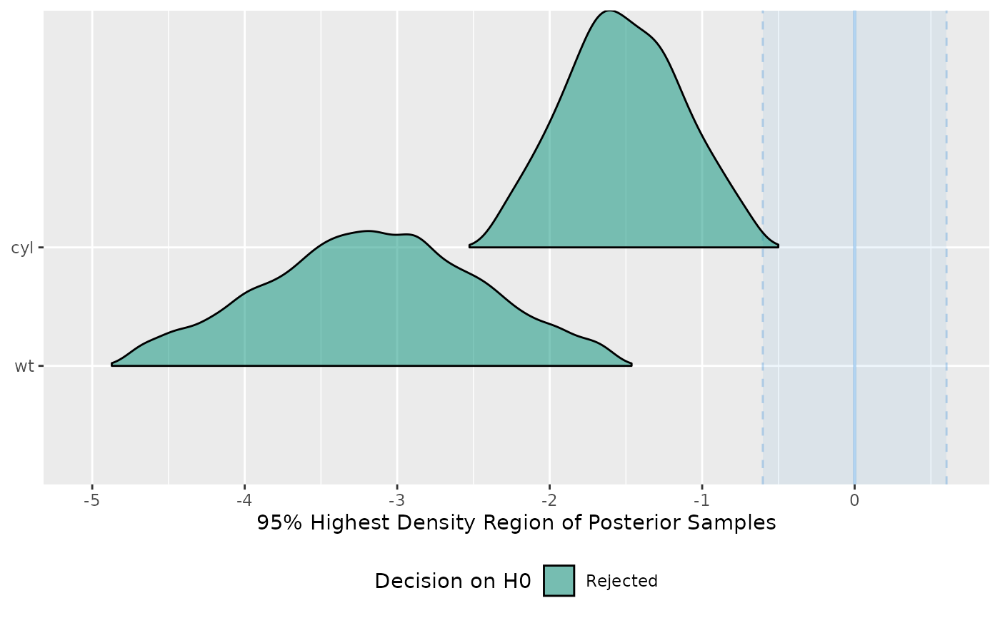

Perform a Test for Practical Equivalence for Bayesian and frequentist models.
Usage
equivalence_test(x, ...)
# Default S3 method
equivalence_test(x, ...)
# S3 method for class 'data.frame'
equivalence_test(
x,
range = "default",
ci = 0.95,
rvar_col = NULL,
verbose = TRUE,
...
)
# S3 method for class 'brmsfit'
equivalence_test(
x,
range = "default",
ci = 0.95,
effects = "fixed",
component = "conditional",
parameters = NULL,
verbose = TRUE,
...
)Arguments
- x
Vector representing a posterior distribution. Can also be a
stanregorbrmsfitmodel.- ...
Currently not used.
- range
ROPE's lower and higher bounds. Should be
"default"or depending on the number of outcome variables a vector or a list. For models with one response,rangecan be:a vector of length two (e.g.,
c(-0.1, 0.1)),a list of numeric vector of the same length as numbers of parameters (see 'Examples').
a list of named numeric vectors, where names correspond to parameter names. In this case, all parameters that have no matching name in
rangewill be set to"default".
In multivariate models,
rangeshould be a list with another list (one for each response variable) of numeric vectors . Vector names should correspond to the name of the response variables. If"default"and input is a vector, the range is set toc(-0.1, 0.1). If"default"and input is a Bayesian model,rope_range()is used. See 'Examples'.- ci
The Credible Interval (CI) probability, corresponding to the proportion of HDI, to use for the percentage in ROPE.
- rvar_col
A single character - the name of an
rvarcolumn in the data frame to be processed. See example inp_direction().- verbose
Toggle off warnings.
- effects
Should variables for fixed effects (
"fixed"), random effects ("random") or both ("all") be returned? Only applies to mixed models. May be abbreviated.For models of from packages brms or rstanarm there are additional options:
"fixed"returns fixed effects."random_variance"return random effects parameters (variance and correlation components, e.g. those parameters that start withsd_orcor_)."grouplevel"returns random effects group level estimates, i.e. those parameters that start withr_."random"returns both"random_variance"and"grouplevel"."all"returns fixed effects and random effects variances."full"returns all parameters.
- component
Which type of parameters to return, such as parameters for the conditional model, the zero-inflated part of the model, the dispersion term, etc. See details in section Model Components. May be abbreviated. Note that the conditional component also refers to the count or mean component - names may differ, depending on the modeling package. There are three convenient shortcuts (not applicable to all model classes):
component = "all"returns all possible parameters.If
component = "location", location parameters such asconditional,zero_inflated,smooth_terms, orinstrumentsare returned (everything that are fixed or random effects - depending on theeffectsargument - but no auxiliary parameters).For
component = "distributional"(or"auxiliary"), components likesigma,dispersion,betaorprecision(and other auxiliary parameters) are returned.
- parameters
Regular expression pattern that describes the parameters that should be returned. Meta-parameters (like
lp__orprior_) are filtered by default, so only parameters that typically appear in thesummary()are returned. Useparametersto select specific parameters for the output.
Value
A data frame with following columns:
ParameterThe model parameter(s), ifxis a model-object. Ifxis a vector, this column is missing.CIThe probability of the HDI.ROPE_low,ROPE_highThe limits of the ROPE. These values are identical for all parameters.ROPE_PercentageThe proportion of the HDI that lies inside the ROPE.ROPE_EquivalenceThe "test result", as character. Either "rejected", "accepted" or "undecided".HDI_low,HDI_highThe lower and upper HDI limits for the parameters.
Details
Documentation is accessible for:
For Bayesian models, the Test for Practical Equivalence is based on the
"HDI+ROPE decision rule" (Kruschke, 2014, 2018) to check whether
parameter values should be accepted or rejected against an explicitly
formulated "null hypothesis" (i.e., a ROPE). In other words, it checks the
percentage of the 89% HDI that is the null region (the ROPE). If
this percentage is sufficiently low, the null hypothesis is rejected. If this
percentage is sufficiently high, the null hypothesis is accepted.
Using the ROPE and the HDI, Kruschke (2018)
suggests using the percentage of the 95% (or 89%, considered more stable)
HDI that falls within the ROPE as a decision rule. If the HDI
is completely outside the ROPE, the "null hypothesis" for this parameter is
"rejected". If the ROPE completely covers the HDI, i.e., all most credible
values of a parameter are inside the region of practical equivalence, the
null hypothesis is accepted. Else, it is undecided whether to accept or
reject the null hypothesis. If the full ROPE is used (i.e., 100% of the
HDI), then the null hypothesis is rejected or accepted if the percentage
of the posterior within the ROPE is smaller than to 2.5% or greater than
97.5%. Desirable results are low proportions inside the ROPE (the closer
to zero the better).
Some attention is required for finding suitable values for the ROPE limits
(argument range). See 'Details' in rope_range() for further
information.
Multicollinearity: Non-independent covariates
When parameters show strong correlations, i.e. when covariates are not independent, the joint parameter distributions may shift towards or away from the ROPE. In such cases, the test for practical equivalence may have inappropriate results. Collinearity invalidates ROPE and hypothesis testing based on univariate marginals, as the probabilities are conditional on independence. Most problematic are the results of the "undecided" parameters, which may either move further towards "rejection" or away from it (Kruschke 2014, 340f).
equivalence_test() performs a simple check for pairwise correlations
between parameters, but as there can be collinearity between more than two variables,
a first step to check the assumptions of this hypothesis testing is to look
at different pair plots. An even more sophisticated check is the projection
predictive variable selection (Piironen and Vehtari 2017).
Note
There is a print()-method with a digits-argument to control
the amount of digits in the output, and there is a
plot()-method
to visualize the results from the equivalence-test (for models only).
Model components
Possible values for the component argument depend on the model class.
Following are valid options:
"all": returns all model components, applies to all models, but will only have an effect for models with more than just the conditional model component."conditional": only returns the conditional component, i.e. "fixed effects" terms from the model. Will only have an effect for models with more than just the conditional model component."smooth_terms": returns smooth terms, only applies to GAMs (or similar models that may contain smooth terms)."zero_inflated"(or"zi"): returns the zero-inflation component."location": returns location parameters such asconditional,zero_inflated, orsmooth_terms(everything that are fixed or random effects - depending on theeffectsargument - but no auxiliary parameters)."distributional"(or"auxiliary"): components likesigma,dispersion,betaorprecision(and other auxiliary parameters) are returned.
For models of class brmsfit (package brms), even more options are
possible for the component argument, which are not all documented in detail
here. See also ?insight::find_parameters.
References
Kruschke, J. K. (2018). Rejecting or accepting parameter values in Bayesian estimation. Advances in Methods and Practices in Psychological Science, 1(2), 270-280. doi:10.1177/2515245918771304
Kruschke, J. K. (2014). Doing Bayesian data analysis: A tutorial with R, JAGS, and Stan. Academic Press
Piironen, J., & Vehtari, A. (2017). Comparison of Bayesian predictive methods for model selection. Statistics and Computing, 27(3), 711–735. doi:10.1007/s11222-016-9649-y
Examples
library(bayestestR)
equivalence_test(x = rnorm(1000, 0, 0.01), range = c(-0.1, 0.1))
#> # Test for Practical Equivalence
#>
#> ROPE: [-0.10 0.10]
#>
#> H0 | inside ROPE | 95% HDI
#> --------------------------------------
#> Accepted | 100.00 % | [-0.02, 0.02]
#>
#>
equivalence_test(x = rnorm(1000, 0, 1), range = c(-0.1, 0.1))
#> # Test for Practical Equivalence
#>
#> ROPE: [-0.10 0.10]
#>
#> H0 | inside ROPE | 95% HDI
#> ---------------------------------------
#> Undecided | 8.21 % | [-2.02, 1.95]
#>
#>
equivalence_test(x = rnorm(1000, 1, 0.01), range = c(-0.1, 0.1))
#> # Test for Practical Equivalence
#>
#> ROPE: [-0.10 0.10]
#>
#> H0 | inside ROPE | 95% HDI
#> -------------------------------------
#> Rejected | 0.00 % | [0.98, 1.02]
#>
#>
equivalence_test(x = rnorm(1000, 1, 1), ci = c(.50, .99))
#> # Test for Practical Equivalence
#>
#> ROPE: [-0.10 0.10]
#>
#> H0 | inside ROPE | 50% HDI
#> -------------------------------------
#> Rejected | 0.00 % | [0.28, 1.65]
#>
#>
#> H0 | inside ROPE | 99% HDI
#> ---------------------------------------
#> Undecided | 5.45 % | [-1.58, 3.53]
#>
#>
# print more digits
test <- equivalence_test(x = rnorm(1000, 1, 1), ci = c(.50, .99))
print(test, digits = 4)
#> # Test for Practical Equivalence
#>
#> ROPE: [-0.1000 0.1000]
#>
#> H0 | inside ROPE | 50% HDI
#> -----------------------------------------
#> Rejected | 0.0000 % | [0.3113, 1.6862]
#>
#>
#> H0 | inside ROPE | 99% HDI
#> -------------------------------------------
#> Undecided | 4.9495 % | [-1.7070, 3.7015]
#>
#>
# \donttest{
model <- rstanarm::stan_glm(mpg ~ wt + cyl, data = mtcars)
#>
#> SAMPLING FOR MODEL 'continuous' NOW (CHAIN 1).
#> Chain 1:
#> Chain 1: Gradient evaluation took 2.3e-05 seconds
#> Chain 1: 1000 transitions using 10 leapfrog steps per transition would take 0.23 seconds.
#> Chain 1: Adjust your expectations accordingly!
#> Chain 1:
#> Chain 1:
#> Chain 1: Iteration: 1 / 2000 [ 0%] (Warmup)
#> Chain 1: Iteration: 200 / 2000 [ 10%] (Warmup)
#> Chain 1: Iteration: 400 / 2000 [ 20%] (Warmup)
#> Chain 1: Iteration: 600 / 2000 [ 30%] (Warmup)
#> Chain 1: Iteration: 800 / 2000 [ 40%] (Warmup)
#> Chain 1: Iteration: 1000 / 2000 [ 50%] (Warmup)
#> Chain 1: Iteration: 1001 / 2000 [ 50%] (Sampling)
#> Chain 1: Iteration: 1200 / 2000 [ 60%] (Sampling)
#> Chain 1: Iteration: 1400 / 2000 [ 70%] (Sampling)
#> Chain 1: Iteration: 1600 / 2000 [ 80%] (Sampling)
#> Chain 1: Iteration: 1800 / 2000 [ 90%] (Sampling)
#> Chain 1: Iteration: 2000 / 2000 [100%] (Sampling)
#> Chain 1:
#> Chain 1: Elapsed Time: 0.047 seconds (Warm-up)
#> Chain 1: 0.049 seconds (Sampling)
#> Chain 1: 0.096 seconds (Total)
#> Chain 1:
#>
#> SAMPLING FOR MODEL 'continuous' NOW (CHAIN 2).
#> Chain 2:
#> Chain 2: Gradient evaluation took 9e-06 seconds
#> Chain 2: 1000 transitions using 10 leapfrog steps per transition would take 0.09 seconds.
#> Chain 2: Adjust your expectations accordingly!
#> Chain 2:
#> Chain 2:
#> Chain 2: Iteration: 1 / 2000 [ 0%] (Warmup)
#> Chain 2: Iteration: 200 / 2000 [ 10%] (Warmup)
#> Chain 2: Iteration: 400 / 2000 [ 20%] (Warmup)
#> Chain 2: Iteration: 600 / 2000 [ 30%] (Warmup)
#> Chain 2: Iteration: 800 / 2000 [ 40%] (Warmup)
#> Chain 2: Iteration: 1000 / 2000 [ 50%] (Warmup)
#> Chain 2: Iteration: 1001 / 2000 [ 50%] (Sampling)
#> Chain 2: Iteration: 1200 / 2000 [ 60%] (Sampling)
#> Chain 2: Iteration: 1400 / 2000 [ 70%] (Sampling)
#> Chain 2: Iteration: 1600 / 2000 [ 80%] (Sampling)
#> Chain 2: Iteration: 1800 / 2000 [ 90%] (Sampling)
#> Chain 2: Iteration: 2000 / 2000 [100%] (Sampling)
#> Chain 2:
#> Chain 2: Elapsed Time: 0.054 seconds (Warm-up)
#> Chain 2: 0.042 seconds (Sampling)
#> Chain 2: 0.096 seconds (Total)
#> Chain 2:
#>
#> SAMPLING FOR MODEL 'continuous' NOW (CHAIN 3).
#> Chain 3:
#> Chain 3: Gradient evaluation took 9e-06 seconds
#> Chain 3: 1000 transitions using 10 leapfrog steps per transition would take 0.09 seconds.
#> Chain 3: Adjust your expectations accordingly!
#> Chain 3:
#> Chain 3:
#> Chain 3: Iteration: 1 / 2000 [ 0%] (Warmup)
#> Chain 3: Iteration: 200 / 2000 [ 10%] (Warmup)
#> Chain 3: Iteration: 400 / 2000 [ 20%] (Warmup)
#> Chain 3: Iteration: 600 / 2000 [ 30%] (Warmup)
#> Chain 3: Iteration: 800 / 2000 [ 40%] (Warmup)
#> Chain 3: Iteration: 1000 / 2000 [ 50%] (Warmup)
#> Chain 3: Iteration: 1001 / 2000 [ 50%] (Sampling)
#> Chain 3: Iteration: 1200 / 2000 [ 60%] (Sampling)
#> Chain 3: Iteration: 1400 / 2000 [ 70%] (Sampling)
#> Chain 3: Iteration: 1600 / 2000 [ 80%] (Sampling)
#> Chain 3: Iteration: 1800 / 2000 [ 90%] (Sampling)
#> Chain 3: Iteration: 2000 / 2000 [100%] (Sampling)
#> Chain 3:
#> Chain 3: Elapsed Time: 0.05 seconds (Warm-up)
#> Chain 3: 0.045 seconds (Sampling)
#> Chain 3: 0.095 seconds (Total)
#> Chain 3:
#>
#> SAMPLING FOR MODEL 'continuous' NOW (CHAIN 4).
#> Chain 4:
#> Chain 4: Gradient evaluation took 9e-06 seconds
#> Chain 4: 1000 transitions using 10 leapfrog steps per transition would take 0.09 seconds.
#> Chain 4: Adjust your expectations accordingly!
#> Chain 4:
#> Chain 4:
#> Chain 4: Iteration: 1 / 2000 [ 0%] (Warmup)
#> Chain 4: Iteration: 200 / 2000 [ 10%] (Warmup)
#> Chain 4: Iteration: 400 / 2000 [ 20%] (Warmup)
#> Chain 4: Iteration: 600 / 2000 [ 30%] (Warmup)
#> Chain 4: Iteration: 800 / 2000 [ 40%] (Warmup)
#> Chain 4: Iteration: 1000 / 2000 [ 50%] (Warmup)
#> Chain 4: Iteration: 1001 / 2000 [ 50%] (Sampling)
#> Chain 4: Iteration: 1200 / 2000 [ 60%] (Sampling)
#> Chain 4: Iteration: 1400 / 2000 [ 70%] (Sampling)
#> Chain 4: Iteration: 1600 / 2000 [ 80%] (Sampling)
#> Chain 4: Iteration: 1800 / 2000 [ 90%] (Sampling)
#> Chain 4: Iteration: 2000 / 2000 [100%] (Sampling)
#> Chain 4:
#> Chain 4: Elapsed Time: 0.042 seconds (Warm-up)
#> Chain 4: 0.046 seconds (Sampling)
#> Chain 4: 0.088 seconds (Total)
#> Chain 4:
equivalence_test(model)
#> Possible multicollinearity between cyl and wt (r = 0.78). This might
#> lead to inappropriate results. See 'Details' in '?equivalence_test'.
#> # Test for Practical Equivalence
#>
#> ROPE: [-0.60 0.60]
#>
#> Parameter | H0 | inside ROPE | 95% HDI
#> -----------------------------------------------------
#> (Intercept) | Rejected | 0.00 % | [36.06, 43.20]
#> wt | Rejected | 0.00 % | [-4.77, -1.57]
#> cyl | Rejected | 0.00 % | [-2.36, -0.66]
#>
#>
# multiple ROPE ranges - asymmetric, symmetric, default
equivalence_test(model, range = list(c(10, 40), c(-5, -4), "default"))
#> Possible multicollinearity between cyl and wt (r = 0.78). This might
#> lead to inappropriate results. See 'Details' in '?equivalence_test'.
#> # Test for Practical Equivalence
#>
#> Parameter | H0 | inside ROPE | 95% HDI | ROPE
#> -----------------------------------------------------------------------
#> (Intercept) | Undecided | 57.37 % | [36.06, 43.20] | [10.00, 40.00]
#> wt | Undecided | 12.97 % | [-4.77, -1.57] | [-5.00, -4.00]
#> cyl | Rejected | 0.00 % | [-2.36, -0.66] | [-0.10, 0.10]
#>
#>
# named ROPE ranges
equivalence_test(model, range = list(wt = c(-5, -4), `(Intercept)` = c(10, 40)))
#> Possible multicollinearity between cyl and wt (r = 0.78). This might
#> lead to inappropriate results. See 'Details' in '?equivalence_test'.
#> # Test for Practical Equivalence
#>
#> Parameter | H0 | inside ROPE | 95% HDI | ROPE
#> -----------------------------------------------------------------------
#> (Intercept) | Undecided | 57.37 % | [36.06, 43.20] | [10.00, 40.00]
#> wt | Undecided | 12.97 % | [-4.77, -1.57] | [-5.00, -4.00]
#> cyl | Rejected | 0.00 % | [-2.36, -0.66] | [-0.10, 0.10]
#>
#>
# plot result
test <- equivalence_test(model)
#> Possible multicollinearity between cyl and wt (r = 0.78). This might
#> lead to inappropriate results. See 'Details' in '?equivalence_test'.
plot(test)
#> Picking joint bandwidth of 0.0924

equivalence_test(emmeans::emtrends(model, ~1, "wt", data = mtcars))
#> # Test for Practical Equivalence
#>
#> ROPE: [-0.10 0.10]
#>
#> X1 | H0 | inside ROPE | 95% HDI
#> -------------------------------------------------
#> overall | Rejected | 0.00 % | [-4.77, -1.57]
#>
#>
model <- brms::brm(mpg ~ wt + cyl, data = mtcars)
#> Compiling Stan program...
#> Start sampling
#>
#> SAMPLING FOR MODEL 'anon_model' NOW (CHAIN 1).
#> Chain 1:
#> Chain 1: Gradient evaluation took 7e-06 seconds
#> Chain 1: 1000 transitions using 10 leapfrog steps per transition would take 0.07 seconds.
#> Chain 1: Adjust your expectations accordingly!
#> Chain 1:
#> Chain 1:
#> Chain 1: Iteration: 1 / 2000 [ 0%] (Warmup)
#> Chain 1: Iteration: 200 / 2000 [ 10%] (Warmup)
#> Chain 1: Iteration: 400 / 2000 [ 20%] (Warmup)
#> Chain 1: Iteration: 600 / 2000 [ 30%] (Warmup)
#> Chain 1: Iteration: 800 / 2000 [ 40%] (Warmup)
#> Chain 1: Iteration: 1000 / 2000 [ 50%] (Warmup)
#> Chain 1: Iteration: 1001 / 2000 [ 50%] (Sampling)
#> Chain 1: Iteration: 1200 / 2000 [ 60%] (Sampling)
#> Chain 1: Iteration: 1400 / 2000 [ 70%] (Sampling)
#> Chain 1: Iteration: 1600 / 2000 [ 80%] (Sampling)
#> Chain 1: Iteration: 1800 / 2000 [ 90%] (Sampling)
#> Chain 1: Iteration: 2000 / 2000 [100%] (Sampling)
#> Chain 1:
#> Chain 1: Elapsed Time: 0.019 seconds (Warm-up)
#> Chain 1: 0.018 seconds (Sampling)
#> Chain 1: 0.037 seconds (Total)
#> Chain 1:
#>
#> SAMPLING FOR MODEL 'anon_model' NOW (CHAIN 2).
#> Chain 2:
#> Chain 2: Gradient evaluation took 3e-06 seconds
#> Chain 2: 1000 transitions using 10 leapfrog steps per transition would take 0.03 seconds.
#> Chain 2: Adjust your expectations accordingly!
#> Chain 2:
#> Chain 2:
#> Chain 2: Iteration: 1 / 2000 [ 0%] (Warmup)
#> Chain 2: Iteration: 200 / 2000 [ 10%] (Warmup)
#> Chain 2: Iteration: 400 / 2000 [ 20%] (Warmup)
#> Chain 2: Iteration: 600 / 2000 [ 30%] (Warmup)
#> Chain 2: Iteration: 800 / 2000 [ 40%] (Warmup)
#> Chain 2: Iteration: 1000 / 2000 [ 50%] (Warmup)
#> Chain 2: Iteration: 1001 / 2000 [ 50%] (Sampling)
#> Chain 2: Iteration: 1200 / 2000 [ 60%] (Sampling)
#> Chain 2: Iteration: 1400 / 2000 [ 70%] (Sampling)
#> Chain 2: Iteration: 1600 / 2000 [ 80%] (Sampling)
#> Chain 2: Iteration: 1800 / 2000 [ 90%] (Sampling)
#> Chain 2: Iteration: 2000 / 2000 [100%] (Sampling)
#> Chain 2:
#> Chain 2: Elapsed Time: 0.019 seconds (Warm-up)
#> Chain 2: 0.019 seconds (Sampling)
#> Chain 2: 0.038 seconds (Total)
#> Chain 2:
#>
#> SAMPLING FOR MODEL 'anon_model' NOW (CHAIN 3).
#> Chain 3:
#> Chain 3: Gradient evaluation took 3e-06 seconds
#> Chain 3: 1000 transitions using 10 leapfrog steps per transition would take 0.03 seconds.
#> Chain 3: Adjust your expectations accordingly!
#> Chain 3:
#> Chain 3:
#> Chain 3: Iteration: 1 / 2000 [ 0%] (Warmup)
#> Chain 3: Iteration: 200 / 2000 [ 10%] (Warmup)
#> Chain 3: Iteration: 400 / 2000 [ 20%] (Warmup)
#> Chain 3: Iteration: 600 / 2000 [ 30%] (Warmup)
#> Chain 3: Iteration: 800 / 2000 [ 40%] (Warmup)
#> Chain 3: Iteration: 1000 / 2000 [ 50%] (Warmup)
#> Chain 3: Iteration: 1001 / 2000 [ 50%] (Sampling)
#> Chain 3: Iteration: 1200 / 2000 [ 60%] (Sampling)
#> Chain 3: Iteration: 1400 / 2000 [ 70%] (Sampling)
#> Chain 3: Iteration: 1600 / 2000 [ 80%] (Sampling)
#> Chain 3: Iteration: 1800 / 2000 [ 90%] (Sampling)
#> Chain 3: Iteration: 2000 / 2000 [100%] (Sampling)
#> Chain 3:
#> Chain 3: Elapsed Time: 0.019 seconds (Warm-up)
#> Chain 3: 0.017 seconds (Sampling)
#> Chain 3: 0.036 seconds (Total)
#> Chain 3:
#>
#> SAMPLING FOR MODEL 'anon_model' NOW (CHAIN 4).
#> Chain 4:
#> Chain 4: Gradient evaluation took 3e-06 seconds
#> Chain 4: 1000 transitions using 10 leapfrog steps per transition would take 0.03 seconds.
#> Chain 4: Adjust your expectations accordingly!
#> Chain 4:
#> Chain 4:
#> Chain 4: Iteration: 1 / 2000 [ 0%] (Warmup)
#> Chain 4: Iteration: 200 / 2000 [ 10%] (Warmup)
#> Chain 4: Iteration: 400 / 2000 [ 20%] (Warmup)
#> Chain 4: Iteration: 600 / 2000 [ 30%] (Warmup)
#> Chain 4: Iteration: 800 / 2000 [ 40%] (Warmup)
#> Chain 4: Iteration: 1000 / 2000 [ 50%] (Warmup)
#> Chain 4: Iteration: 1001 / 2000 [ 50%] (Sampling)
#> Chain 4: Iteration: 1200 / 2000 [ 60%] (Sampling)
#> Chain 4: Iteration: 1400 / 2000 [ 70%] (Sampling)
#> Chain 4: Iteration: 1600 / 2000 [ 80%] (Sampling)
#> Chain 4: Iteration: 1800 / 2000 [ 90%] (Sampling)
#> Chain 4: Iteration: 2000 / 2000 [100%] (Sampling)
#> Chain 4:
#> Chain 4: Elapsed Time: 0.021 seconds (Warm-up)
#> Chain 4: 0.017 seconds (Sampling)
#> Chain 4: 0.038 seconds (Total)
#> Chain 4:
equivalence_test(model)
#> Possible multicollinearity between b_cyl and b_wt (r = 0.79). This might
#> lead to inappropriate results. See 'Details' in '?equivalence_test'.
#> # Test for Practical Equivalence
#>
#> ROPE: [-0.60 0.60]
#>
#> Parameter | H0 | inside ROPE | 95% HDI
#> ---------------------------------------------------
#> Intercept | Rejected | 0.00 % | [36.14, 43.39]
#> wt | Rejected | 0.00 % | [-4.77, -1.57]
#> cyl | Rejected | 0.00 % | [-2.38, -0.63]
#>
#>
bf <- BayesFactor::ttestBF(x = rnorm(100, 1, 1))
# equivalence_test(bf)
# }